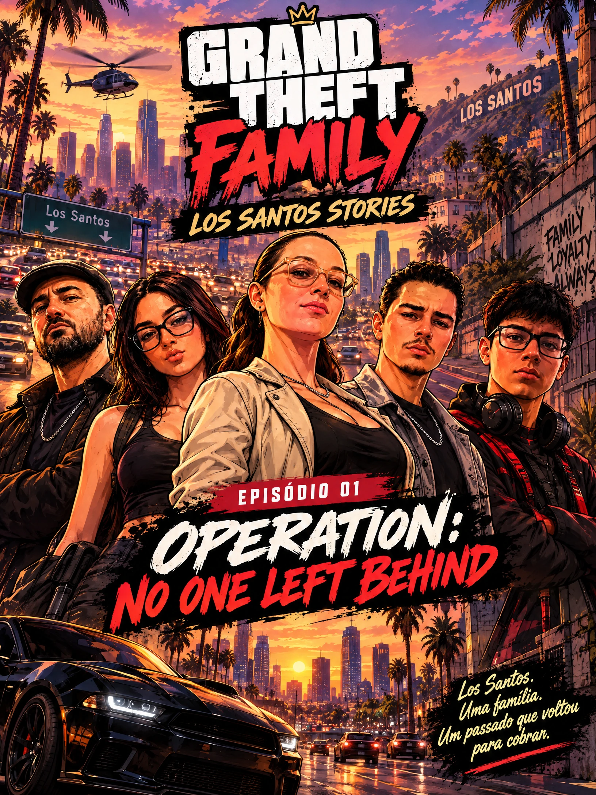

Direção criativa humana
As escolhas de identidade, aparência, narrativa e aceitação dos resultados ficaram sob direção da autora.
ESTUDO DE CASO · CRIAÇÃO ASSISTIDA POR IA
Uma ideia familiar ganhou personagens, narrativa, imagens e uma experiência digital. Este estudo observa o caminho — incluindo escolhas, tentativas, correções e limites.

O DESAFIO
O ponto de partida era apresentar cinco integrantes da família como personagens em uma página inspirada no universo de GTA. A proposta evoluiu: em vez de apenas exibir perfis, a experiência passaria a contar uma história ambientada em Los Santos.
As escolhas de identidade, aparência, narrativa e aceitação dos resultados ficaram sob direção da autora.
A IA apoiou a organização, a criação de materiais visuais, a estrutura narrativa e a implementação web.
Os resultados foram avaliados, criticados e ajustados quando não correspondiam à intenção do projeto.
O QUE FOI CONSTRUÍDO
O trabalho reuniu apresentação de personagens, roteiro, cenas ilustradas e um leitor web. A experiência final descrita nos registros inclui uma capa, sete páginas e recursos de navegação e ampliação de quadros.
UMA DESCOBERTA IMPORTANTE
O avanço aconteceu quando as observações foram transformadas em critérios concretos: o que precisava permanecer, o que podia variar e o que deveria ser corrigido.
O PROCESSO
Os passos abaixo organizam os principais registros em uma leitura curta. Eles não substituem a cronologia nem as ressalvas do relatório completo.
Entender a ideia inicial, os materiais disponíveis e o que a experiência precisava se tornar. A apresentação de personagens evoluiu para uma proposta de mini HQ.
Organizar elenco, premissa, capítulos, referências e critérios visuais. A preservação das feições e a função narrativa de cada imagem tornaram-se pontos importantes.
Desenvolver personagens, cenas, páginas e interface. A produção combinou roteiro, imagens geradas com IA e implementação de um leitor web.
Verificar navegação, recursos, responsividade e leitura dos quadros; registrar decisões, correções e também o que os documentos não permitem afirmar.
TRANSPARÊNCIA
O estudo também registra limites: nem todos os prompts técnicos originais foram preservados, algumas etapas têm documentação reconstruída e não há métricas quantitativas que comprovem economia de tempo ou ganho de qualidade. Essas lacunas fazem parte da análise.
QUER IR MAIS FUNDO?
A documentação original preserva o histórico, os detalhes técnicos, as evidências, as divergências e as limitações identificadas durante a análise.
Abrir documentação original